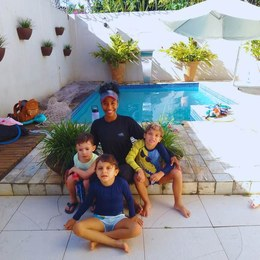
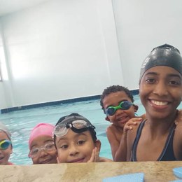
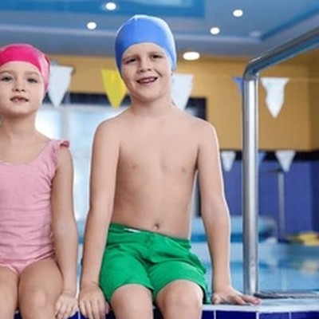
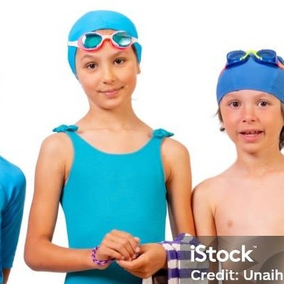
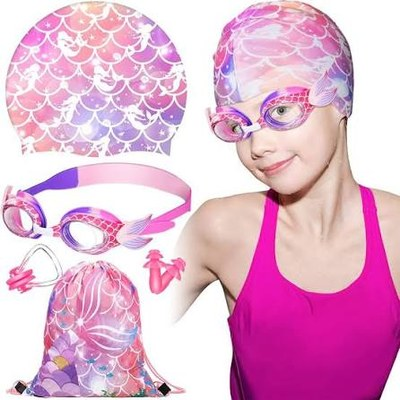
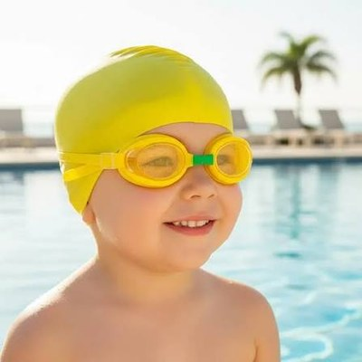
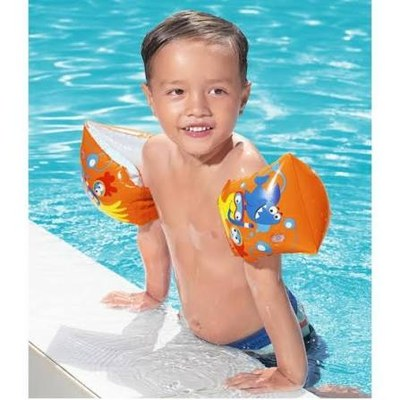
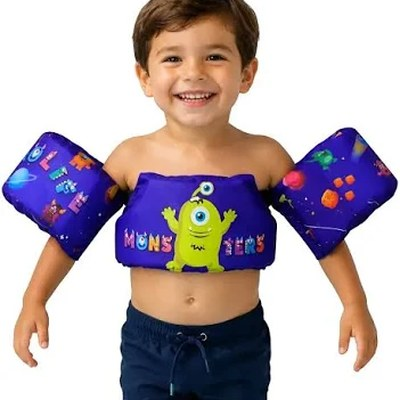
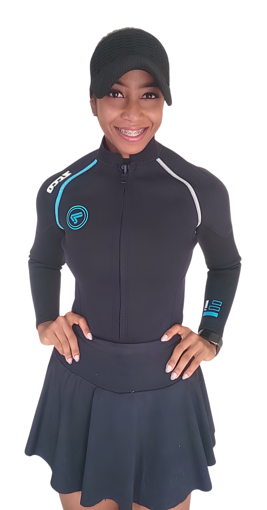

Informativo Natação
CREF/BA-022609
Seu filho com mais segurança na água.
Aulas particulares de natação infantil com turmas reduzidas, acompanhamento próximo e foco em sobrevivência aquática. Porque aprender a nadar é preservar a vida.
Olá! É um prazer receber você.
Nesta página você encontrará as informações de forma clara e objetiva, para decidir com tranquilidade sobre as aulas de natação infantil.


Neste informativo
O valor da natação
Aprender a nadar é preservar a vida.
4 afogamentos por dia
No Brasil, cerca de 4 crianças morrem afogadas por dia, sendo que uma dessas mortes ocorre dentro do ambiente doméstico a cada 3 dias.
1 em 24
Afogamento é uma das principais causas de morte entre crianças e jovens de 1 a 24 anos.
< 5 anos
Crianças menores de 5 anos estão entre os grupos de maior risco.
Dessa forma, a natação é uma maneira de preservar a vida, sendo indispensável o aprendizado desde a infância.
Objetivo e formato
Como funciona o meu trabalho
Metodologia
Centrada na sobrevivência aquática e no desenvolvimento psicomotor. Priorizando a segurança e a adaptação gradual ao ritmo de cada criança.
Abordagem
Qualitativa, biopsicossocial: embasada nos pressupostos teóricos de Gallahue; Ozmun (fases do desenvolvimento motor) e Morgana (estágios de aprendizagem cognitiva, associativa e autônoma).
DIFERENCIAL
Uma alternativa às aulas genéricas, sem turmas lotadas e com registro real de progresso.
Em vez de focar apenas no treinamento esportivo/competitivo, avalio de forma
contínua a autonomia, esforço e habilidades aquáticas funcionais.
Metas claras e reavaliações periódicas para acompanhar a evolução de cada
aluno.
Fundamentada na literatura acadêmica, com suporte aos pais por meio de guia
próprio e envolvimento ativo da família.
O MÉTODO
Medo ou insegurança na água por
→
Adaptação gradual e confiança
Turmas lotadas e genéricas por
→
Grupos pequenos e acompanhamento próximo
Apenas “saber nadar” por
→
Sobrevivência aquática como prioridade
Público prioritário
- Crianças a partir de 3 anos de idade.
- Prioridade para crianças a partir de 5 anos.
- Pode haver exceção conforme nível de desempenho e aceitação às aulas.
Limite de alunos por turma
As turmas são formadas a partir de 2 alunos, com limite máximo de 4 alunos para melhor acompanhamento.
Exceções são possíveis a depender do ambiente e contexto
Exceção de público (1 a 3 anos)
- Tempo de aula: até 30 minutos.
- Responsável com disponibilidade para entrar na piscina com a criança.
- Máximo de 3 alunos.
- Ficha individual limitada à adaptação aquática e psicomotricidade.
Acompanhamento
Bônus do acompanhamento particular
Bônus 01
Feedbacks mensais
Durante o acompanhamento, você recebe retornos via WhatsApp todo mês.
Bônus 02
Planilha individual
Planilha individual com avaliação qualitativa sobre o desenvolvimento do seu filho na água.
Bônus 03
Guia para a família
Você recebe um guia para entender cada etapa da avaliação. A participação e o incentivo dos pais fazem diferença no processo da criança.
Para começar
Material inicial necessário
-
Roupa adequada


-
Touca e óculos


-
Bóia


Tabela de valores — natação
Escolha o seu plano
Você escolhe a modalidade e o período; eu cuido do acompanhamento na água.
2 alunos
Plano mensal (avulso)
R$ 310,00 /mês
Plano semestral (renovação março/setembro)
R$ 300,00 /mês
6x de R$ 300,00
R$ 60,00 de desconto no semestre (Economia de R$ 10/mês)
- 8 aulas no mês — 2 vezes por semana
- Aulas de 30 a 40 minutos
Turma reduzida
Até 3 alunos · plano mensal (avulso)
R$ 285,00 /mês
Plano semestral (renovação março/setembro)
R$ 270,00 /mês
6x de R$ 270,00
R$ 90,00 de desconto no semestre (Economia de R$ 15/mês)
- 8 aulas no mês — 2 vezes por semana
- Aulas de 30 a 40 minutos
+3 alunos
Plano mensal (avulso)
R$ 240,00 /mês
Plano semestral (renovação março/setembro)
R$ 220,00 /mês
6x de R$ 220,00
R$ 120,00 de desconto no semestre (Economia de R$ 20/mês)
- 8 aulas no mês — 2 vezes por semana
- Aulas de 30 a 40 minutos
Condições do plano semestral
Desconto progressivo na mensalidade ao optar pelo plano semestral:
- Turma premium (2 alunos): R$ 10,00/mês (economia de R$ 60,00 no semestre);
- Turma reduzida (até 3 alunos): R$ 15,00/mês (economia de R$ 90,00);
- Turma regular (+3 alunos): R$ 20,00/mês (economia de R$ 120,00)
- Ciclos de renovação semestral programados para março e setembro.
Acompanhamento individual: valores sob consulta pelo WhatsApp.
Quem conduz as aulas

Sou apaixonada pelo movimento e pela sobrevivência aquática, o que orienta cada aula de natação infantil que conduzo, com atenção individual a cada criança.
Formada em Licenciatura pela Universidade Estadual de Santa Cruz (UESC) e Bacharel em Educação Física pelo Centro Universitário Internacional (UNINTER).
Atuando desde 2021 na natação infantil e hidroginástica com idosos pela CLIFIMED/Ipiaú e em atendimentos particulares, com experiência de 5 anos acumulados na área, além de atividades extracurriculares anteriores.
Dúvidas frequentes
Perguntas que as famílias costumam fazer
O público prioritário são crianças a partir de 3 anos, com prioridade para quem
tem 5 anos ou mais. Entre 1 e 3 anos há exceção, com aula de até 30 minutos,
presença do responsável na piscina e turma de no máximo 3 alunos.
As turmas começam com 2 alunos e o limite habitual é de 4, para garantir
acompanhamento de qualidade, com possível exceção à depender do ambiente e
contexto.
O objetivo primário é a sobrevivência aquática. O trabalho não é voltado ao
treinamento desportivo competitivo, embora a evolução técnica seja acompanhada
quando faz sentido para a criança.
No plano mensal (avulso), o valor é por mês conforme a modalidade da turma. No
plano semestral, o desconto na mensalidade varia conforme a turma: premium
(2 alunos) R$ 10,00/mês (economia de R$ 60,00
no semestre); reduzida (até 3 alunos) R$ 15,00/mês
(R$ 90,00 no semestre); regular (+3 alunos)
R$ 20,00/mês (R$ 120,00 no semestre). Pagamento
em 6 parcelas, com renovação programada para março e setembro.
O trabalho continua com exercícios físicos fora da piscina, voltados ao
desenvolvimento psicomotor, mantendo a rotina de horários e estimulando o
crescimento saudável até a retomada regular das aulas na água.
Pelo WhatsApp (73) 99104-0064 ou Instagram
@prof.joyceneres. Estou à disposição para esclarecer dúvidas sobre vagas, horários e valores.
Gratidão pelo contato!
Em caso de dúvidas, fale comigo novamente. Será um prazer orientar você sobre o próximo passo na natação do seu filho.